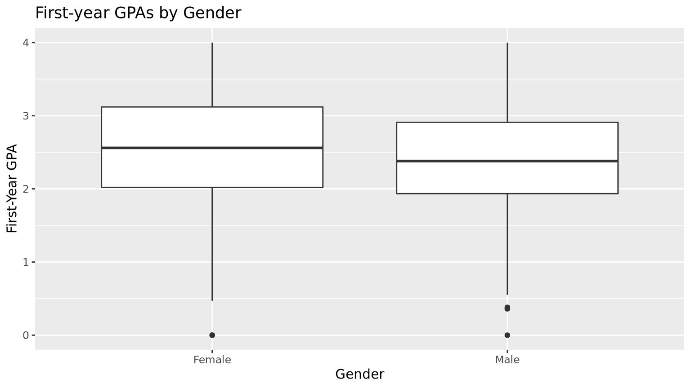
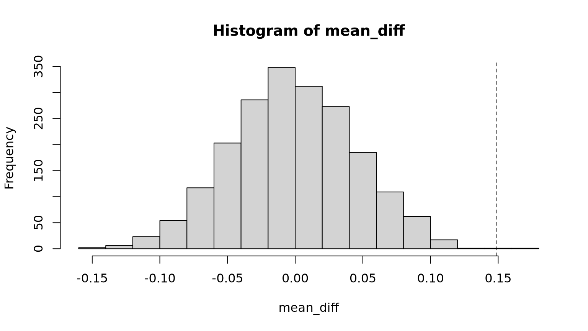
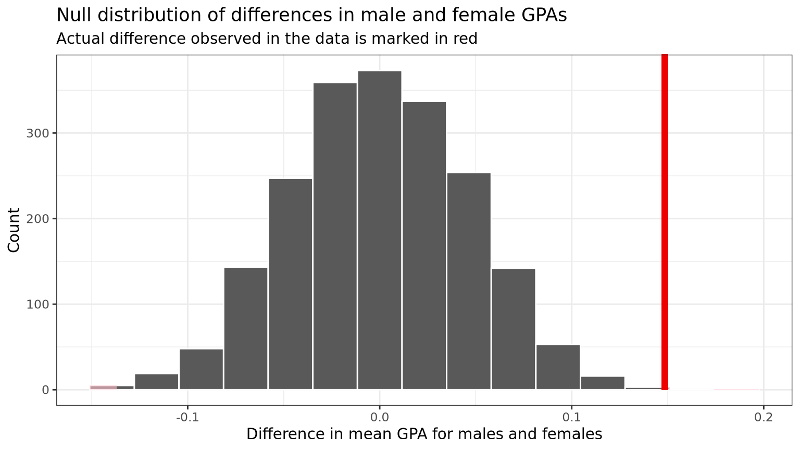
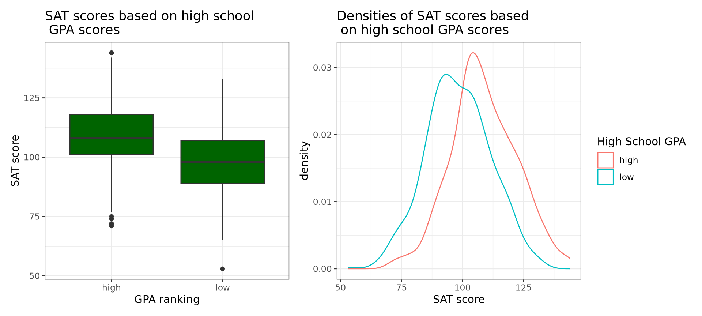

# Show first 6 rows of sat_gpakable(head(sat_gpa))
…1
sex
sat_verbal
sat_math
sat_total
gpa_hs
gpa_fy
1
Male
65
62
127
high
3.18
2
Female
58
64
122
high
3.33
3
Female
56
60
116
high
3.25
4
Male
42
53
95
high
2.42
5
Male
55
52
107
high
2.63
6
Female
55
56
111
high
2.91
Be sure to take a look at the data in sat_gpa. Each row or case in this data frame is a student. The data includes the binary gender (sex) of each student; the math (sat_math), verbal (sat_verbal) and total SAT scores (sat_total) for each student; the GPA of each student in high school (gpa_hs) categorized as “low” or “high”; and the GPA of each student their first year of college on a numeric scale (gpa_fy).
Note
We will use hypothesis testing to answer the following questions:
Is there a difference in male and female freshman GPAs?
Is there a difference in total SAT score for students with a “low” and “high” high-school GPA?
Note, if you get stuck as you are working through this, it will be helpful to go back and read Chapter 9 in ModernDive.
Gender Differences in First-Year GPA?
Exploratory Data Analysis
Problem 1
Calculate the mean GPA score for each sex, using the group_by and summarize commands from the dplyr package. Store the result in avg_gpa_sex. What is the difference in sample mean GPA’s? Make a guess: is this difference statistically significant?
Problem 1 Answers
# Type your code and comments inside the code chunkavg_sat_gpa <- sat_gpa %>%group_by(sex) %>%summarize(mean(gpa_fy))avg_sat_gpa
# A tibble: 2 × 2
sex `mean(gpa_fy)`
<chr> <dbl>
1 Female 2.54
2 Male 2.40
The difference in GPA is 0.1485209.
This doesn’t appear to be a statistically significant difference.
Problem 2
Generate a data visualization that displays the GPAs of the two groups. Be sure to include a title and label your axes.
Problem 2 Answers
# Type your code and comments inside the code chunkggplot(sat_gpa, aes(x = sex, y = gpa_fy))+geom_boxplot() +labs(title ='First-year GPAs by Gender', x ='Gender', y ='First-Year GPA')

Stating a Null Hypothesis
We will now test the null hypothesis that there’s no difference in population mean GPA between the sexes at the population level. We can write this out in mathematical notation
Here’s how we use infer to run this hypothesis test:
Step 1: Calculate the Observed Difference
Note that the order we choose does not matter here (female then male)…but since we used order = c("Female", "Male") here, we should do the same in subsequent calculations!
R Code
obs_diff_gpa_sex <- sat_gpa %>%specify(gpa_fy ~ sex) %>%calculate(stat ="diff in means", order =c("Female", "Male")) %>%pull()obs_diff_gpa_sex
Note that this is the difference in the group means we calculated earlier!
R Code
obs_diff_gpa_sex
[1] 0.1485209
2.544587-2.396066
[1] 0.148521
avf_avm <- obs_diff_gpa_sexavf_avm
[1] 0.1485209
Step 2. Generate the Null Distribution of \(\delta\)
This step involves generating simulated values as if we lived in a world where there’s no difference between the two groups. Going back to the idea of permutation, and tactile sampling, this is akin to shuffling the GPA scores between male and female labels (i.e. removing the structure to the data) just as we could have done with index cards.
What was the size of the “shuffled” (permuted) sample in each replicate?
Problem 3 Answers
The size of the shuffled sample was 1000.
Problem 4
How many times did we do a different “shuffle” (permute) here to the sample? How many rows are in the gpas_in_null_world data frame?
Problem 4 Answers
# Type your code and comments inside the code chunknrow(gpas_in_null_world)
[1] 2000000
we did a different shuffle 2000 times.
There are 2000000 rows in gpas_in_null_world.
Step 3. Calculate the Differences Between Male and Females Under the Null Hypothesis
The following calculates the differences in mean GPA for males and females for “shuffled” (permuted) data.
R Code
gpa_diff_under_null <- gpas_in_null_world %>%calculate(stat ="diff in means", order =c("Female", "Male")) gpa_diff_under_null %>%slice(1:5) %>%# show first five rowskable()
replicate
stat
1
-0.0225343
2
0.0044534
3
0.0204698
4
-0.0005518
5
-0.0045158
# Done with a for loopB <-2000mean_diff <-numeric(B)for(i in1:B){ mean_diff[i] <--diff(tapply(sat_gpa$gpa_fy, sample(sat_gpa$sex), mean))}hist(mean_diff)abline(v = obs_diff, lty ="dashed")

Problem 5
How many rows are in the gpa_diff_under_null data frame? Why?
Problem 5 Answers
There are 2000 rows in gpa_diff_under_null because there is a for loop that loops and adds to mean_diff 2000 times.
Step 4. Visualize how the Observed Difference Compares to the Null Distribution of \(\delta\)
The following plots the \(\delta\) values we calculated for each of the different “shuffled” replicates. This is the null distribution of \(\delta\). The red line shows the observed difference between male and female scores in the data (0.1485209) from Step 1.
R Code
gpa_diff_under_null %>%visualize() +labs(x ="Difference in mean GPA for males and females", y ="Count",title ="Null distribution of differences in male and female GPAs",subtitle ="Actual difference observed in the data is marked in red") +shade_p_value(obs_stat = obs_diff_gpa_sex, direction ="two-sided") +theme_bw()

Note
Note that zero is the center of this null distribution. The null hypothesis is that there is no difference between males and females in GPA score. In the permutations, zero was the most common value, because all structure was removed from the data. GPA values were sorted into male and female at random. Values as large as 0.1 and -0.1 occurred, but much less frequently, because they are just not as likely when structure is removed from the data.
Step 5: Calculate a p-value
R Code
gpa_diff_under_null %>%get_pvalue(obs_stat = obs_diff_gpa_sex, direction ="both") %>%pull() -> pvaluepvalue
[1] 0.001
# OR from the for loop - slighlty more conservative approachp_value <- (sum(mean_diff >= obs_diff)*2+1)/(B +1)p_value
[1] 0.002498751
The p-value indicates that there is a 0.001 or 0.0025 chance (very low even with the conservative p-value computation) that we would see a difference of 0.1485209 in GPA scores between males and females (or a bigger difference) if in fact there was truly no difference between the sexes in GPA scores at the population level.
Problem 6
Fill in the blanks and select the appropriate words below to write up the results & conclusions for this test:
Problem 6 Answers
The mean GPA scores for females in our sample (\(\bar{x}_{f}\) = 2.5445868) was greater than that of males (\(\bar{x}_{m}\) = 2.3960659). This difference was statistically significant at \(\alpha = 0.05\), (p = 0.001). Given this p-value, I would reject the Null hypothesis and find evidence that females have higher GPAs than males at the population level.
Step 6: Calculate a Confidence Interval for the Difference
The following will allow us to calculate a 95% bootstrap percentile confidence interval for the difference between mean GPA scores for females and males.
R Code
ci_diff_gpa_means <- sat_gpa %>%specify(gpa_fy ~ sex) %>%generate(reps =2000, type ="bootstrap") %>%calculate(stat ="diff in means", order =c("Female", "Male")) %>%get_ci(level =0.95, type ="percentile")kable(ci_diff_gpa_means)
lower_ci
upper_ci
0.0544304
0.2400219
# Do the same thing with a for loopsat_gpa %>%filter(sex =="Female") %>%select(gpa_fy) %>%pull() -> fem_gpasat_gpa %>%filter(sex =="Male") %>%select(gpa_fy) %>%pull() -> mal_gpamean_ds <-numeric(B)for(i in1:B){ bss1 <-sample(fem_gpa, size =sum(!is.na(fem_gpa)), replace =TRUE) bss2 <-sample(mal_gpa, size =sum(!is.na(mal_gpa)), replace =TRUE) mean_ds[i] <-mean(bss1) -mean(bss2)}kable(quantile(mean_ds, probs =c(0.025, 0.975)))
x
2.5%
0.0548812
97.5%
0.2355701
Complete all the Above Tasks with a t-test
Note that all the above steps can be done with one line of code if a slew of assumptions like normality and equal variance of the groups are met.
R Code
t.test(gpa_fy ~ sex, var.equal =TRUE, data = sat_gpa)
Two Sample t-test
data: gpa_fy by sex
t = 3.1828, df = 998, p-value = 0.001504
alternative hypothesis: true difference in means between group Female and group Male is not equal to 0
95 percent confidence interval:
0.05695029 0.24009148
sample estimates:
mean in group Female mean in group Male
2.544587 2.396066
Relationship Between High-School & First-Year GPA?
For this analysis sat_total is the outcome variable, and gpa_hs is the predictor variable, with two levels “low” and “high”.
Exploratory Data Analysis
We can first calculate the mean total SAT score for each group (i.e students with a low and high GPA), using the group_by and summarize commands from the dplyr package.
R Code
avg_sat_gpa <- sat_gpa %>%group_by(gpa_hs) %>%summarize(sat_total =mean(sat_total), n =n())kable(avg_sat_gpa)
gpa_hs
sat_total
n
high
108.67828
488
low
98.23047
512
We will next generate a data visualization that displays the total SAT scores of the two groups. Be sure to include a title and label your axes.
R Code
library(patchwork)p1 <-ggplot(sat_gpa, aes(x = gpa_hs, y = sat_total)) +geom_boxplot(fill ="darkgreen") +labs(title ="SAT scores based on high school \n GPA scores", x ="GPA ranking", y ="SAT score") +theme_bw()# Orp2 <-ggplot(data = sat_gpa, aes(x = sat_total, color = gpa_hs)) +geom_density() +theme_bw() +labs(color ="High School GPA",title ="Densities of SAT scores based \n on high school GPA scores",x ="SAT score")p1 + p2

Stating a Null Hypothesis
Problem 7
State the null hypothesis that you are testing (using words and symbols).
Problem 7 Answers
The GPA difference doesn’t affect the SAT score.
Testing the Null Hypothesis
Problem 8
Calculate the observed difference between the mean total SAT scores of the low and high GPA high-school students. Store the result in an object named obs_diff_sat_hs_gpa
Problem 8 Answers
# Type your code and comments inside the code chunkobs_diff_sat_hs_gpa <- sat_gpa %>%specify(sat_total ~ gpa_hs) %>%calculate(stat ="diff in means", order =c("high", "low"))
Problem 9
Generate the null distribution of \(\delta\). Here you need to generate simulated values as if we lived in a world where there’s no difference in SAT scores between high school students with low and high GPAs. Use 2000 replications to generate the null distribution.
Problem 9 Answers
# Type your code and comments inside the code chunknull_sat <- sat_gpa %>%specify(sat_total ~ gpa_hs) %>%hypothesize(null ="independence") %>%generate(reps =2000, type ="permute")
Problem 10
Calculate the differences in mean SAT scores between students with high and low GPA scores under the null hypothesis. Note you should use whatever order you chose in 7. Store your results in an object named sat_diff_under_null. Show the first six rows of sat_diff_under_null.
Problem 10 Answers
# Type your code and comments inside the code chunksat_diff_under_null <- null_sat %>%calculate(stat ="diff in means", order =c("high", "low")) sat_diff_under_null %>%slice(1:6)
Visualize how the observed difference compares to the null distribution of \(\delta\). Generate a histogram of the null distribution, with a vertical red line showing the observed difference in SAT scores between high school students with a high and low GPA.
Problem 11 Answers
# Type your code and comments inside the code chunksat_diff_under_null %>%visualize(obs_stat = obs_diff_sat_hs_gpa) +labs(x ="Difference in SAT score", y ="Count",title ="Null distribution of differences in SAT scores") +shade_p_value(obs_stat = obs_diff_sat_hs_gpa, direction ="two-sided") +theme_bw()
Problem 12
Calculate the p-value.
Problem 12 Answers
# Type your code and comments inside the code chunksat_diff_under_null %>%get_pvalue(obs_stat = obs_diff_sat_hs_gpa, direction ="both")
# A tibble: 1 × 1
p_value
<dbl>
1 0
Delete this and put your text answer here.
Problem 13
Write up the results & conclusions for this hypothesis test. Note, p-values less than 0.001 are often reported as p < 0.001.
Problem 13 Answers
The mean SAT scores for students with high GPA rankings was greater than those with low GPA rankings. This difference was statistically significant at α=0.05 , (p < 0.001). In conclusion, I would reject the Null hypothesis and say that those with higher GPA rankings will have higher SAT scores than those with lower GPA rankings.
Problem 14
Compute a 95% bootstrap percentile confidence interval for the difference in total SAT scores for students with high and low high-school GPA scores. Note that you should use whatever order you chose for your null hypothesis. That is either order = c("low", "high") or order = c("high", "low"). Provide a basic interpretation of your computed interval.
Problem 14 Answers
# Type your code and comments inside the code chunkci_diff_sat_means <- sat_gpa %>%specify(sat_total ~ gpa_hs) %>%generate(reps =2000) %>%calculate(stat ="diff in means", order =c("high", "low")) %>%get_ci(level =0.95)ci_diff_gpa_means
My lower confidence interval is .0544, and my upper confidence interval is .2400. There is between a 95% probability that the average difference between GPA of high and low SAT scorers is between these two values.
Problem 15
Use a t-test to test the null hypothesis that average total SAT scores do not differ between students with high and low high school GPA scores at the population level.
Problem 15 Answers
# Type your code and comments inside the code chunk# Use the bootstrap T distribution to testt.test(sat_total ~ gpa_hs, var.equal =TRUE, data = sat_gpa)
Two Sample t-test
data: sat_total by gpa_hs
t = 12.413, df = 998, p-value < 2.2e-16
alternative hypothesis: true difference in means between group high and group low is not equal to 0
95 percent confidence interval:
8.79614 12.09948
sample estimates:
mean in group high mean in group low
108.67828 98.23047
Turning in Your Work
You will need to make sure you commit and push all of your changes to the github education repository where you obtained the lab.
Tip
Make sure you render a final copy with all your changes and work.
Look at your final html file to make sure it contains the work you expect and is formatted properly.
Logging out of the Server
There are many statistics classes and students using the Server. To keep the server running as fast as possible, it is best to sign out when you are done. To do so, follow all the same steps for closing Quarto document:
Tip
Save all your work.
Click on the orange button in the far right corner of the screen to quit R
Choose don’t save for the Workspace image
When the browser refreshes, you can click on the sign out next to your name in the top right.